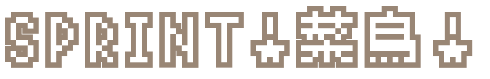
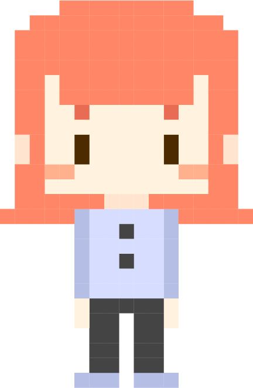
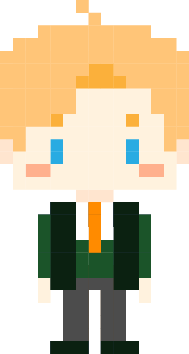
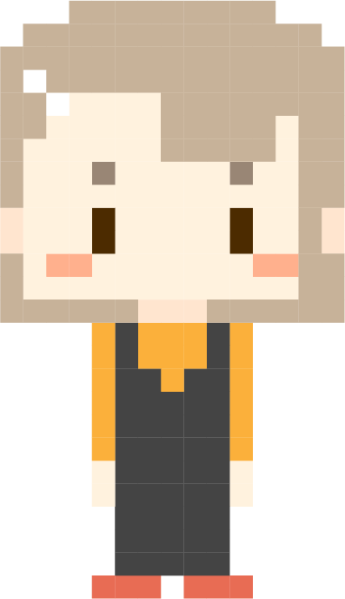
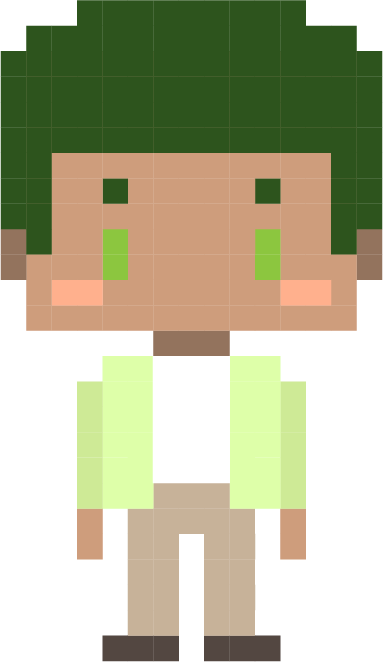

任意點擊開始




菜鳥！恭喜你成為六角學院的正式員工啦！
在正式加入專案開發之前，
需要請你先了解 Scrum 的流程與精神！
成功通過 Scrum 新手村的試煉吧！
？？？
請選擇代表你的角色。
？？？
哈囉~{{ name }}。
我是開發 A 組的 PO，小敏。
PO也就是產品負責人(Product Owner)。
產品負責人會負責評估產品待辦清單的價值與重要性，依序排列要執行的優先順序，對齊產品目標。最後排出產品待辦清單(Product Backlog)唷！
剛好我最近手邊有一個『人才招募系統』的案子，我才剛列出了『產品需求清單』。既然你都來了，來試試看調整產品優先度，排出產品待辦清單吧！
請把需求放到產品待辦清單，並調整待辦的優先度順序。公司也推薦使用 來做任務的管理喔！
產品代辦清單 ProductBacklog
-
優先度高
- 會員系統（登入、註冊、管理）
- 後台職缺管理功能 （資訊上架、下架、顯示應徵者資料）
- 前台職缺列表 （缺詳細內容、點選可發送應徵意願）
- 應徵者的線上履歷編輯器
小敏
小敏
產品待辦清單好了之後，
我們來召集 Scrum Master 和開發團隊共同召開短衝規劃會議（Sprint Planning）。
短衝即是一個迭代，具有固定時間限制，我們會在這個會議中，決定要完成哪些工作事項來達到商業需求，列出短衝待辦清單（Sprint Backlog），並由開發團隊在接下來的產品開發週期裡執行。
嗨嗨！你是新來的前端吧！
我是這次的 Scrum Master 小捷，
我的工作主要是促成開發團隊成員協作、引導團隊進行自省會議，提升團隊成員對 Scrum 瞭解。
這兩位是小斯和小廣，是我們開發團隊的成員唷～ 目前我們團隊一次 Sprint 週期是兩週的時間，依照我的觀察，目前團隊可以負擔的點數 (Sprint Point) 大約是 20 點左右。
菜鳥，你應該不知道點數是什麼意思吧哈哈！
我來跟你介紹一下吧～
Sprint Point 目的是為了衡量速度，是用大概花費的時間預估出的相對點數。
沒錯，如同小斯說的，我這邊已經把剛剛討論好的點數標上去囉～你來練習把任務排到短衝待辦清單吧！
By the way，我們平常管理任務是使用
這套軟體，你有時間記得先去註冊和熟悉唷～
請將產品待辦清單中的項目拖曳到短衝清單。 (20點內)
產品代辦清單 ProductBacklog
-
優先度高
-
前台職缺列表（職缺詳細內容、點選可發送應徵意願）
8
-
後台職缺管理功能（資訊上架、下架、顯示應徵者資料）
5
-
會員系統（登入、註冊、管理）
4
-
應徵者的線上履歷編輯器
13
開發Ａ組的短衝待辦清單
-
{{ backlogScore }}/20點
小敏
小捷
小斯
小廣
小捷
小斯
小廣
小捷
等等等等等，你都還不知道什麼是 Sprint 吧！ 讓我先為你介紹一下～ 仔細聽好唷，等等會考考你！
Sprint 是一個短衝，開發團隊會在這期間執行開發。
在這段期間內，開發團隊舉辦每日站立會議 Daily Scrum，追蹤成員間的工作狀況。
除了每日站立會議，在 Sprint 結束後也會有：
短衝檢視會議 SprintReview、
短衝自省會議 Sprint Retrospective。
每日站立會議 Daily Scrum
每天都要進行的會議，以 15 分鐘為限制
- 昨天為團隊的短衝目標（Sprint Goal）做了那些進度
- 今天我會如何準備來幫助團隊達到短衝目標
- 過程中有遇到什麼問題、難題
透過團隊分享，追蹤大家的工作狀況。
短衝檢視會議 Sprint Review
用來檢視該次短衝增量的成果，
以蒐集相關的回饋數據或意見。
短衝自省會議 Sprint Retrospective
團隊在自省會議裡，
會共同回顧該短衝歷程發生的事情：
- 好的地方
- 可以改進的地方
- 如何維持我們已有的成功經驗
優化工作流程、讓團隊有變得更好的機會。
推薦工具：
在這經典的 Scrum 流程圖中，這些流程分別代表哪一個會議呢？請把對應的流程拖曳到正確位置。
Scrum 流程圖
- 短衝檢視會議 Sprint Review
- 短衝自省會議 Sprint Retrospective
- 每日站立會議(Daily Scrum)